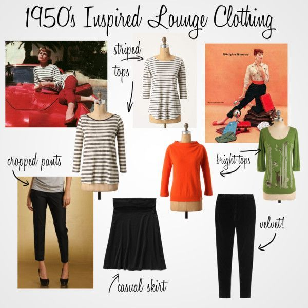

Sumergirse en el mundo de la ropa vintage y de segunda mano es como abrir una cápsula del tiempo ‚è≥‚ú® llena de historias, estilo y encanto único. Cada prenda tiene alma üíñ, y encontrarla es parte de la magia. Para que esta experiencia sea tan especial como aut√©ntica, lo primero es mirar con ojos curiosos üëÄ y atentos: observa los detalles, siente las texturas üßµ, revisa costuras, botones y cierres, porque ah√≠ se esconde la calidad que ha sobrevivido al paso del tiempo.
La ropa vintage tiene una historia, una textura especial y un encanto que no se encuentra en la moda rápida. Pero para que esas prendas sigan luciendo increíbles por muchos años más, necesitan un cuidado especial. Aquí te damos algunos consejos básicos (pero muy efectivos) para que tus tesoros vintage se conserven como nuevos:
Las telas antiguas suelen ser más delicadas que las modernas. Siempre que sea posible, lava tus prendas a mano con agua fría y un detergente suave. Evita el uso de cloro o productos agresivos.
üí° Tip extra: Si usas lavadora, col√≥calas en una bolsa de lavado y selecciona un ciclo para ropa delicada.

El calor excesivo puede debilitar fibras antiguas. Seca tus prendas al aire libre, pero en la sombra. El sol directo puede desteñir colores y dañar tejidos más frágiles.
Muchas telas vintage no soportan el calor directo de una plancha convencional. Usa siempre un paño de algodón entre la plancha y la prenda, y selecciona la temperatura más baja posible.
Cuélgalas en perchas acolchadas para evitar marcas o deformaciones. Las prendas más pesadas, como suéteres o abrigos, guárdalas dobladas para evitar que se estiren.
üß∫ Evita bolsas plásticas o lugares húmedos para almacenarlas, ya que pueden provocar moho o malos olores.
Algunas prendas vintage tienen etiquetas con instrucciones originales de cuidado. Si las tienen, síguelas. Si no, investiga el tipo de tela para aplicar el mejor tratamiento posible.